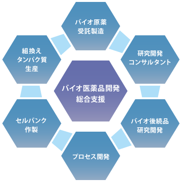

会社概要
| 社名 | 株式会社 横浜バイオリサーチアンドサプライ |
| 創業 | 2006年 8月 |
| 代表 | 加瀬 大明 |
| 所在地 | 〒236-0004 横浜市金沢区福浦2-12-1 癸巳化成H＆Bセンター 7F |
| 資本金 | 10,000千円 |
| 従業員数 | 9名 |
| 事業内容 | バイオ医薬品の研究開発・人材教育。 バイオ医薬品を含むタンパク質製造(ラボスケールから生産スケールまで様々なサイズに対応)。 培養・精製装置開発支援。 |

沿革
| 2006年 8月 | 会社設立 所在地：横浜市金沢区福浦 代表取締役社長：加瀬 泰明 |
| 2006年10月 | 事務所設立 所在地：横浜市産学共同研究センター実験棟C区画 |
| 2007年 1月 | 事務所移転 所在地：横浜新技術創造館リーディングベンチャープラザ(鶴見区小野町) |
| 2007年 7月 | スタートアップラボラトリー開設 所在地：横浜新技術創造館リーディングベンチャープラザ(鶴見区小野町) |
| 2009年 4月 | 本社・事務所・ラボ移転 所在地：横浜バイオ産業センター(鶴見区末広町) |
| 2009年12月 | 横浜バイオ医薬品研究開発センター(YBIRD)の事業協力者に選定 所在地：横浜バイオ産業センター(鶴見区末広町) 事業主体：(財)木原記念横浜生命科学振興財団 |
| 2011年 4月 | 横浜バイオ医薬品研究開発センター(YBIRD)の運営開始 |
| 2012年12月 | 横浜バイオ医薬品研究開発センター(YBIRD)の業務委受託契約締結 |
| 2014年 4月 | 代表取締役社長交代 加瀬 大明 取締役、代表取締役社長に就任 |
| 2015年 6月 | 福浦事業所の開設 所在地：癸巳化成H＆Bセンター(金沢区福浦) |
| 2016年 4月 | 横浜バイオ医薬品研究開発センター(YBIRD)の業務委受託契約(第2期)締結 |
| 2024年 4月 | 本社・事務所・ラボ移転 所在地：癸巳化成H＆Bセンター(金沢区福浦) |
役員氏名
| 代表取締役社長 | 加瀬 大明 |
| 取締役 | 藤波 光雄、 木村 朝、 長島 敏晴、 前澤 大介 |
| 監査役 | 石川 剛 |
| 技術顧問 | 小林 薫（神戸大学 客員教授 工学博士） |